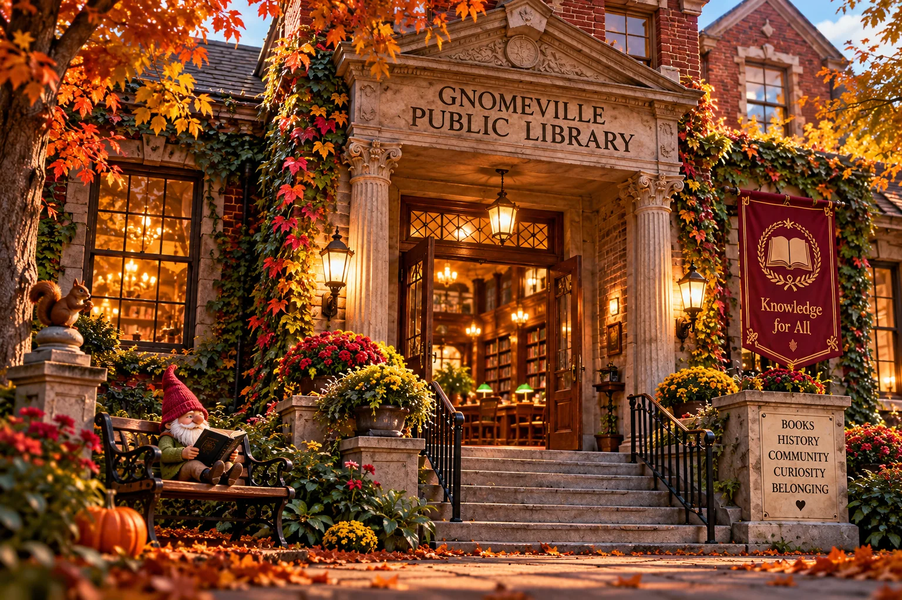
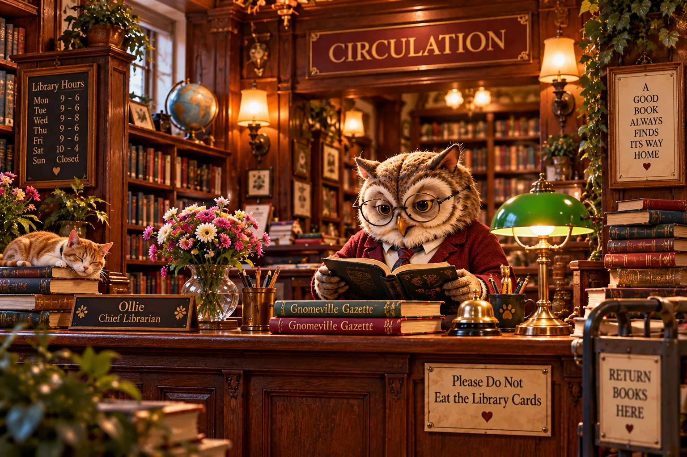
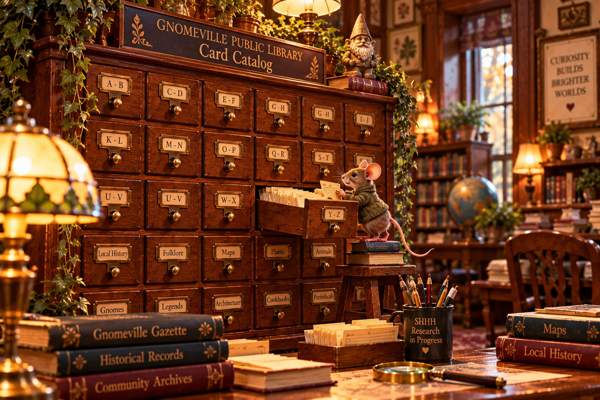

Featured archival research
The 1969 Succession
Mayor Thimblewick disappears. Hank Swanson is elected. The municipality procures an unusual quantity of trousers.
Examine the reel →Municipal Home / Public Library

The Gnomeville Public Library serves readers, researchers, family historians, and citizens who have been advised to consult the historical record.
Explore the town's literary collections, examine digitized newspapers, and trace the people and events that shaped our municipality. Our librarians are pleased to assist with research, although they cannot be held responsible for what you discover.
The Library is committed to preserving the historical record, regardless of whether the historical record wishes to be preserved.

Find books, documents, authors, subjects, and matters of questionable classification.

02Operate the reader and examine digitized records from the 1969 mayoral succession.
03A frequently challenged unauthorized history. Digital edition in preparation.
04Banditson–Vermicelli records, family photographs, and Helga's unsolicited commentary.
Discover the children’s reading room, where stories are shared, friendships are made, and the occasional grown-up forgets the library’s indoor-voice policy.
Mayor Thimblewick disappears. Hank Swanson is elected. The municipality procures an unusual quantity of trousers.
Examine the reel →Our holdings are open to the public. Their implications are not the responsibility of library staff. Requests for the removal of historical materials should be addressed in writing.
The Office of the Mayor has already been informed.